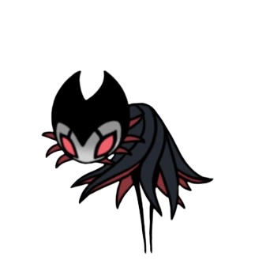
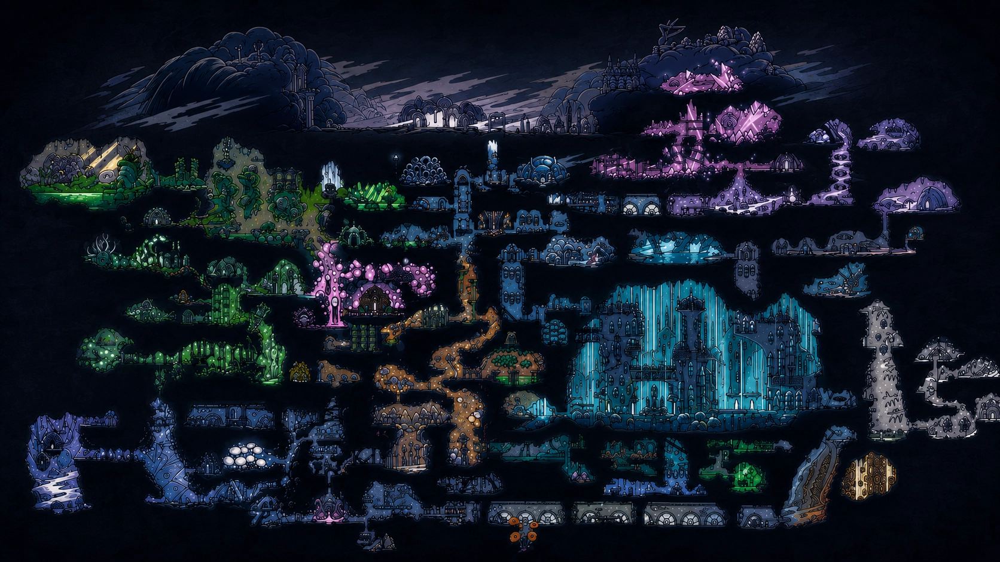
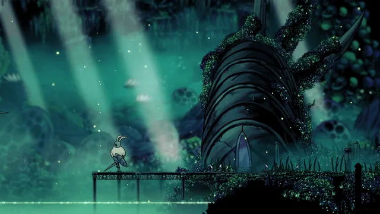

Sobre o jogo
Hollow Knight é um jogo de ação e aventura no estilo metroidvania, ambientado em Hallownest, um antigo reino subterrâneo que caiu em ruína após ser consumido por uma misteriosa infecção. O jogador controla um pequeno cavaleiro que viaja por esse mundo decadente para descobrir sua origem e os segredos por trás da praga que devastou e consumiu seus habitantes. Ao longo da jornada, exploramos cavernas, cidades abandonadas e ruínas antigas, enfrentando inimigos enquanto descobrimos os segredos de uma civilização caída.
Características
- Mapa de Hallownest
- Boss Fights
- Arte Hand-Drawn
- Trilha Sonora

Mapa de Hallownest
Hallownest é formado por diversas áreas interligadas, cada uma com características
próprias, desde florestas exuberantes e cidades abandonadas até cavernas profundas
e regiões dominadas pela escuridão. À medida que novas habilidades são obtidas,
caminhos antes inacessíveis podem ser explorados, revelando atalhos, tesouros escondidos
e novos desafios.
Mais do que um simples guia de navegação, o mapa incentiva a curiosidade e a exploração
constante. Cada nova área descoberta amplia a compreensão sobre o reino e sua história,
tornando a aventura ainda mais envolvente e recompensadora. Através dele, o jogador acompanha
sua progressão enquanto desvenda os mistérios de Hallownest e os vestígios de sua antiga civilização.

Boss Fights
As batalhas contra chefes são um dos grandes destaques de Hollow Knight, combinando
lutas intensas, trilhas sonoras marcantes e designs memoráveis. Cada chefe possui
sua própria personalidade, padrões de ataque e história, fazendo com que cada confronto
seja único. Alguns transmitem uma sensação constante de ameaça e imponência, enquanto
outros conseguem equilibrar o perigo com momentos surpreendentemente divertidos e até cômicos.
Entre os chefes mais marcantes está o meu favorito: Grimm, Líder da Trupe Grimm . Com sua aparência
elegante, movimentos rápidos e temática inspirada em um espetáculo sombrio, ele proporciona uma das
lutas mais memoráveis do jogo. Seus ataques parecem uma dança perfeitamente coreografada, exigindo
precisão e domínio das mecânicas para acompanhar seu ritmo.
. Com sua aparência
elegante, movimentos rápidos e temática inspirada em um espetáculo sombrio, ele proporciona uma das
lutas mais memoráveis do jogo. Seus ataques parecem uma dança perfeitamente coreografada, exigindo
precisão e domínio das mecânicas para acompanhar seu ritmo.
Outro confronto muito bem quisto pela comunidade é contras as Mantis Lords . A luta coloca o jogador
contra três guerreiras extremamente ágeis, criando um combate veloz e intenso. Apesar da dificuldade
elevada, o equilíbrio entre desafio e fluidez faz com que muitos, inclusive eu, considerem essa uma
das melhores batalhas do jogo.
. A luta coloca o jogador
contra três guerreiras extremamente ágeis, criando um combate veloz e intenso. Apesar da dificuldade
elevada, o equilíbrio entre desafio e fluidez faz com que muitos, inclusive eu, considerem essa uma
das melhores batalhas do jogo.
Agora, a Absolute Radiance , se encontra em um nível extremo de dificuldade, considerada por muitos o
maior desafio de Hollow Knight. A batalha acontece em múltiplas fases e exige reflexos rápidos,
conhecimento profundo dos padrões de ataque e grande controle do personagem. Sua presença imponente
e seus ataques devastadores representam o ápice dos complexibilidade oferecidos pelos jogos em geral.
, se encontra em um nível extremo de dificuldade, considerada por muitos o
maior desafio de Hollow Knight. A batalha acontece em múltiplas fases e exige reflexos rápidos,
conhecimento profundo dos padrões de ataque e grande controle do personagem. Sua presença imponente
e seus ataques devastadores representam o ápice dos complexibilidade oferecidos pelos jogos em geral.
Por outro lado, nem todos os chefes impressionam apenas pela ameaça. O Dung Defender é um excelente
exemplo de como o jogo também incorpora humor em seus confrontos. Com sua personalidade carismática,
seus gritos animados e a maneira inusitada como utiliza bolas de esterco durante a luta, ele se tornou
um dos meus personagens favoritos. Mesmo sendo um guerreiro respeitado de Hallownest, sua energia contagiante
torna o combate tão divertido quanto memorável.
é um excelente
exemplo de como o jogo também incorpora humor em seus confrontos. Com sua personalidade carismática,
seus gritos animados e a maneira inusitada como utiliza bolas de esterco durante a luta, ele se tornou
um dos meus personagens favoritos. Mesmo sendo um guerreiro respeitado de Hallownest, sua energia contagiante
torna o combate tão divertido quanto memorável.
A batalha contra o The Hollow Knight é um dos momentos mais profundos e emocionantes de Hollow Knight. Diferente
de um confronto tradicional contra um grande vilão, a luta revela a tragédia por trás de alguém que que durante
toda a jornada foi apresentada como a responsável por conter a infecção. Conforme o combate avança, fica evidente
que o Hollow Knight está sofrendo e lutando contra a corrupção que consome seu corpo, chegando até mesmo a ferir a
si próprio em uma tentativa desesperada de resistir. Esse chefe não é nosso inimigo, mas sim uma vítima de um sacrifício
que falhou. Combinado com uma atmosfera melancólica, uma triste trilha sonora e um forte peso narrativo, o confronto
representa de forma brilhante os sacrifícios, sofrimentos e decadência que definem a história de Hallownest.
é um dos momentos mais profundos e emocionantes de Hollow Knight. Diferente
de um confronto tradicional contra um grande vilão, a luta revela a tragédia por trás de alguém que que durante
toda a jornada foi apresentada como a responsável por conter a infecção. Conforme o combate avança, fica evidente
que o Hollow Knight está sofrendo e lutando contra a corrupção que consome seu corpo, chegando até mesmo a ferir a
si próprio em uma tentativa desesperada de resistir. Esse chefe não é nosso inimigo, mas sim uma vítima de um sacrifício
que falhou. Combinado com uma atmosfera melancólica, uma triste trilha sonora e um forte peso narrativo, o confronto
representa de forma brilhante os sacrifícios, sofrimentos e decadência que definem a história de Hallownest.
Essas batalhas demonstram como Hollow Knight consegue criar chefes visualmente marcantes e desafiadores, transformando
cada encontro em uma experiência única. Seja enfrentando figuras intimidadoras, guerreiros lendários ou personagens
inesperadamente carismáticos, as boss fights são parte fundamental do que torna a jornada por Hallownest tão especial.
Arte Hollow Knight
Um dos aspectos mais marcantes de Hollow Knight é sua direção artística, construída a partir de cenários e personagens
desenhados à mão (hand-drawn). Cada área de Hallownest possui uma identidade visual única, com formas, cores e detalhes
cuidadosamente trabalhados para transmitir a atmosfera de cada região. Desde as paisagens exuberantes de Greenpath  , a arte do jogo contribui diretamente para a sensação de exploração e descoberta
que acompanha toda a jornada.
, a arte do jogo contribui diretamente para a sensação de exploração e descoberta
que acompanha toda a jornada.
Embora muitas pessoas considerem Hollow Knight um jogo 3D devido à profundidade visual de seus cenários, tecnicamente
ele é um jogo 2D. Grande parte dessa impressão é criada pelo uso de múltiplas camadas de imagem posicionadas em diferentes
profundidades, uma técnica conhecida como parallax scrolling. Enquanto o jogador se movimenta, essas camadas se deslocam em
velocidades diferentes, criando uma ilusão de profundidade que faz o mundo parecer tridimensional sem que os cenários sejam
realmente modelados em 3D.
Essa abordagem permite que o jogo combine a precisão e a simplicidade da movimentação em duas dimensões com uma apresentação
visual extremamente rica. O resultado é um estilo artístico que permanece bonito mesmo anos após seu lançamento, reforçando a
identidade única de Hollow Knight e ajudando a transformar Hallownest em um dos mundos mais memoráveis dos videogames.
Trilha Sonora
A trilha sonora de Hollow Knight foi composta pelo músico australiano Christopher Larkin e é uma das grandes responsáveis pela
atmosfera marcante do jogo. Suas músicas acompanham a exploração de Hallownest com melodias que variam entre momentos calmos e
melancólicos, como em Dirtmouth e City of Tears, e temas intensos presentes nas batalhas contra chefes.
Cada faixa ajuda a transmitir a identidade das diferentes regiões e reforça as emoções vividas pelo jogador ao longo da jornada.
O trabalho de Christopher Larkin recebeu grande reconhecimento, conquistando em 2017 o prêmio Best Sound for Interactive Media,
concedido pela Australian Screen Sound Guild.
Graças à combinação entre música, ambientação e narrativa, a trilha sonora de Hollow Knight é considerada uma das mais memoráveis
dos jogos independentes e uma parte fundamental da experiência em Hallownest.
Link para a trilha sonora completa: